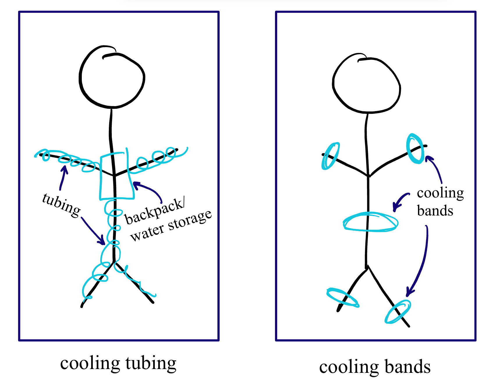

<h1 style= "text-align: center;">
Week 1: Project Proposals </b></h1>
Below are my final project ideas. I'm interested in building mobility aids that would aid my daily life. Generally, mobility aids are either incredibly, prohibitively expensive, don't fully meet my needs, or don't exist at all. I'm hoping to design an item that fills a void where a product doesn't currently exist.
<h2 style= "text-align: center;">
Idea 1: Bodily Cooling Device </b></h2>
My first idea is to create a wearable appliance that cools down the body when it overheats. Currently, the best (affordable) options available to people with heat intolerance (or who just generally are trying to cool down) are regular freezable ice packs, <a href="https://www.amazon.com/Ever-Ready-First-Aid-Disposable/dp/B0BMGXVSKV/ref=sr_1_5_pp?">single-use breakable ice packs</a> (like the ones in first aid bags), <a href="https://www.amazon.com/RJVW-Handheld-Fan-Mini-Portable/dp/B0C68K2T4K/ref=sr_1_39?">hand-held</a> or <a href="https://www.amazon.com/Bladeless-Rechargeable-Adjustable-Hand-free-Certified/dp/B08XZBDWG1/ref=sr_1_5_pp?">neck fans</a>, and <a href="https://www.amazon.com/Hair-Spray-Bottle-Continuous-Hairstyling/dp/B09W7KMMHZ/ref=sr_1_8?">manual spray bottles</a>. There are plenty of devices that are intended to heat the body (<a href="https://www.amazon.com/HotHands-10-count-pack-warmers/dp/B00PGBN11S/ref=sr_1_7?">hand warmers</a>/<a href="https://www.amazon.com/Qdreclod-Jackets-Battery-10000mAh-Electric/dp/B0CG22BHHH/ref=sr_1_10?">heated jackets</a>/<a href="https://www.amazon.com/KCVV-Rechargeable-Electric-Washable-Settings/dp/B0CGR9WBR6/ref=sr_1_15?">heated socks</a>/etc.). However, the only battery-powered high-tech device I know of that does anything to *cool* the body is the <a href="https://embrlabs.com/products/embr-wave-2">Embr Wave 2</a>, a circle which sits on the underside of your wrist... and costs $299 despite covering an area barely larger than a quarter.
I think a better solution has to exist.
I'd like to create a device that does some combination of the following:
<ul>
<li>Includes wearable tubing or bands (perhaps like a wristband, hat, or ankle bracelet) that can bring water to important areas for cooling (the undersides of wrists, sides of neck, top of head, ankles, stomach)</li>
<li>Has a portable mini-mini-freezer-backpack of sorts that cools/stores water brought to the rest of the body</li>
<li>Mixes chemicals found in single-use ice packs to create an instant-cold effect</li>
<li>Includes a fan to cool skin that has been dampened by water</li>
<li>Incorporates a heart rate recorder (for my purposes, an external temperature reader is a less accurate way to assess a need for cooling than heart rate)</li>
</ul>

<-- These are two potential diagrams of cooling tubing / cooling bands.
(Having never built a device like this before, I'm not sure which of the above possibilities are most feasible.)
<h2 style= "text-align: center;">
Idea 2: Heavy Bag Carrier </b></h2>
For people with various joint and mobility difficulties -- or whose bags are simply overstuffed -- carrying heavy items is a difficult burden. I'd like to create a robot on wheels equipped to carry ~30-50lbs of weight that could follow me around and carry things for me. This robot would likely take the form of a large crate or box (like <a href="https://www.amazon.com/dbest-products-Collapsible-Teachers-Capacity/dp/B0CFDCLJ3G/ref=sr_1_5?">this</a>.)
Having never built something like this before, I'm not entirely sure what technologies to use to achieve this. Some ideas:
<ul>
<li>Perhaps the user could place a bluetooth chip in their pocket that the robot would track</li>
<li>Perhaps the robot would be controlled by a manual remote</li>
<li>Perhaps the robot would be trained to follow a specific image (ie. a large blue circle held by the user)</li>
<li>Perhaps the robot would have a set path it was programmed to travel (ie. from the door to the kitchen while carrying groceries)</li>
</ul>